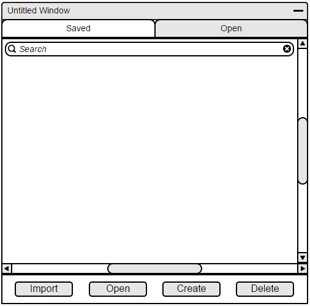
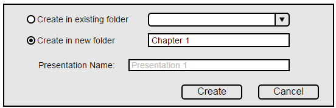
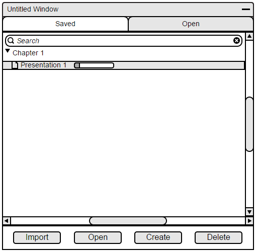

2.2.1. Creating New Lecture
The file manager will allow creation of new presentations. When a user presses the file manager icon on the toolbar, the EClass program will display the file manager as shown in Figure 5.

Figure 5: The File Manager
If a user wants to create a new file, they will do so by selecting the "create" button. When a user selects this, a dialog will appear as shown in Figure 6. They will be able to choose whether to create the file under an existing folder, or create a new folder. Figure 6 shows a user creating their file under a new folder labeled Chapter 1.

Figure 6: Create confirmation
When the new presentation is confirmed, it will appear either under the folder selected, or a new file is created. Figure 7 shows the newly created file under Chapter 1.

Figure 7: After creating new presentation
The following is how a more populated file manager would appear.

Figure 8: A more populated file manager
Prev: [none]
| Next: Inserting lecture elements
| Up: Lecture notes
| Top: index